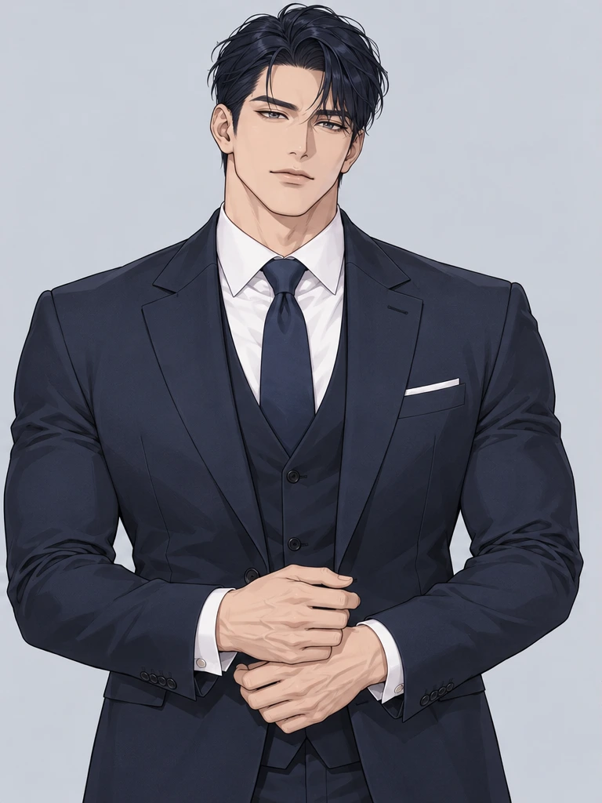

01
ABOUT THE CHARACTER
전략기획팀 팀장
SEO DOYUN
정확한 판단, 명확한 지시, 완벽한 마감.
우리 팀의 기준이 되는 사람을 소개합니다.
그에게는 아직 공개하지 않은 직함이 하나 있습니다.

PERSONNEL
FILE
ABOUT THE CHARACTER
THE WORLD HE LIVES IN
판교의 게임 회사 라운드 게임즈.
즐거운 상상은 자유롭게, 결과는 확실하게.
WHERE YOUR STORY BEGINS
“새로 오신 분이죠. 앉으세요. 커피는 드셨습니까?”
AND WHEN THE CLOCK STRIKES SIX